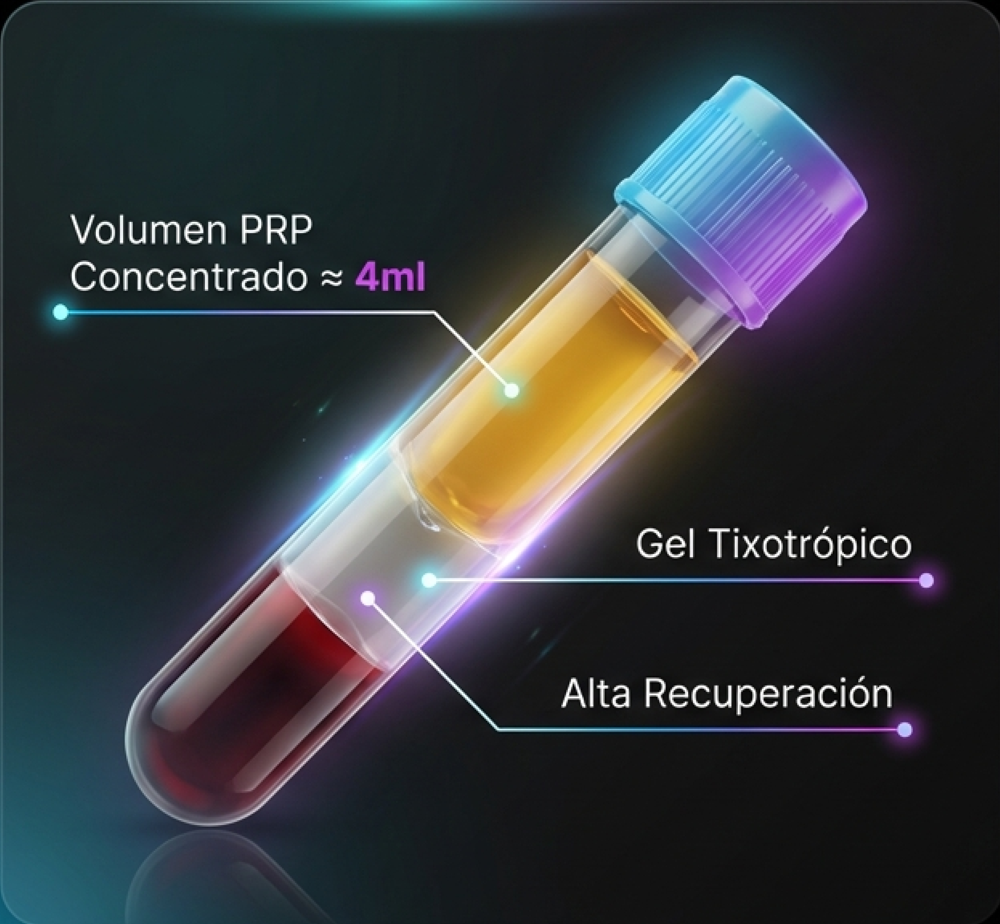
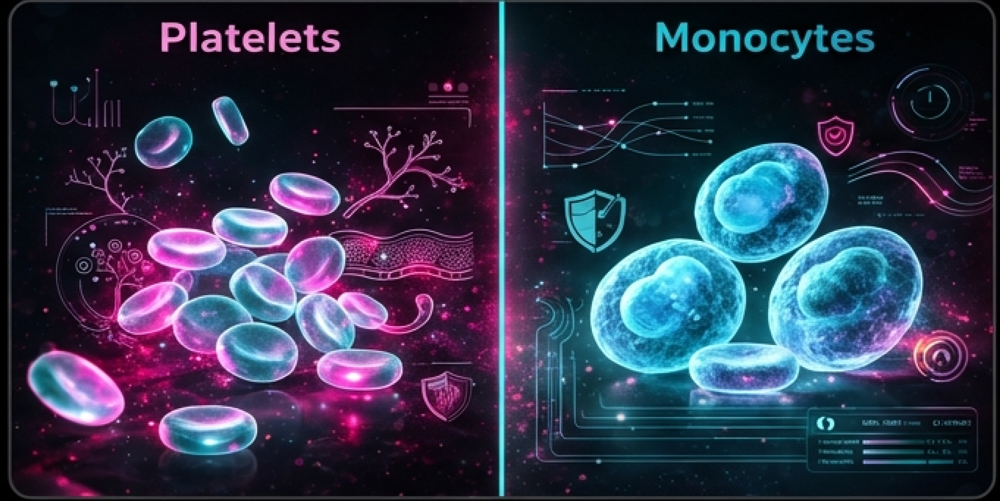
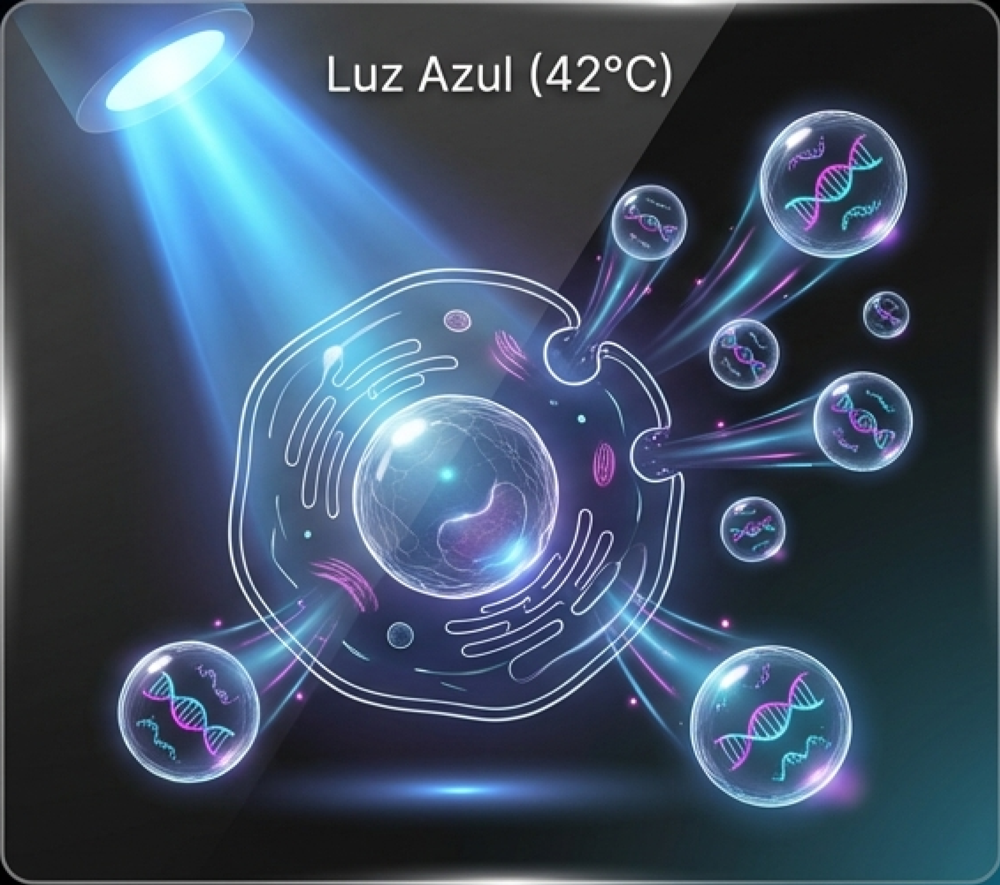

MEDICINA REGENERATIVA DE PRECISIÓN
ALGORITMOS TERAPÉUTICOS AVANZADOS
Del tratamiento paliativo a la bioestimulación activa e inmunomodulación.
- Actualización del arsenal terapéutico para especialistas.
- Enfoque en mecanismos biológicos: PRP de Alta Concentración y Señalización por Exosomas.
EVOLUCIÓN DEL PARADIGMA TERAPÉUTICO
ENFOQUE TRADICIONAL (PALIATIVO)

- Herramientas: Viscosuplementación, Corticoides, AINEs.
- Mecanismo: Lubricación mecánica y supresión sintomática.
- Limitación: No modifica la historia natural. Riesgo de condrotoxicidad. “Silenciar el síntoma”.
ENFOQUE REGENERATIVO (MODIFICADOR)

- Herramientas: PRP de Alta Concentración, Monocitos, Exosomas.
- Mecanismo: Señalización paracrina, inmunomodulación y síntesis de ECM.
- Objetivo: Restitución de la homeostasis tisular. “Reactivar la reparación endógena”.
LA TRIADA DE LA PRECISIÓN BIOLÓGICA
POTENCIA, MODULACIÓN Y SEÑALIZACIÓN
REGENERACIÓN ESTRUCTURAL SBL.PRP.3
Clave: Concentración.
Función: Aporte masivo de Factores de Crecimiento (GF) para fases proliferativas.
INMUNOMODULACIÓN SBL.PRP.3+M
Clave: Monocitos.
Función: Resolución de la inflamación crónica (Polarización M1 → M2).
REPROGRAMACIÓN CELULAR MCT EXOSOMAS
Clave: Señalización Avanzada.
Función: Instrucciones complejas (miRNA, mRNA) para tejidos senescentes.

SBL.PRP.3: BIOESTIMULACIÓN DIRECTA DOSIS-DEPENDIENTE
Premisa Clínica: La respuesta tisular es dosis-dependiente.
Especificaciones Técnicas
- Factor de Concentración: 5.4x (vs 2-3x estándar).
- Recuperación Plaquetaria: >80%.
- Pureza: Eliminación del 99.7% de glóbulos rojos (0.28% RBC residual).
Mecanismo: Degranulación de gránulos alfa → Liberación masiva de PDGF, TGF-β, VEGF.
SBL.PRP.3+M: RESOLVIENDO LA INFLAMACIÓN CRÓNICA
INMUNOMODULACIÓN Y POLARIZACIÓN DE MACRÓFAGOS

- Problema: El 'Fracaso Regenerativo' por inflamación crónica no resuelta.
- Solución: Enriquecimiento selectivo en Células Mononucleares.
- Mecanismo: Los monocitos inducen la transición al fenotipo M2 y liberan IL-10 (Antiinflamatoria).
- Diferenciación: Gel de densidad específica que captura la capa mononuclear.
EXOSOMAS Y META CELL TECHNOLOGY (MCT)
“PRP es el combustible; los Exosomas son las instrucciones.”
Meta Cell Technology (MCT)
Potenciación fototérmica de la muestra autóloga.
- Estímulo: Luz Azul + Temperatura controlada (42°C).
- Resultados: Incremento de ATP, mayor liberación de exosomas, perfil miRNA pro-angiogénico.
Biología: Vesículas (30-150 nm) cargadas de lípidos, proteínas y ácidos nucleicos.

EXO-TECH: EL PRIMER BIOIMPLANTE DE EXOSOMAS AUTÓLOGOS
Definición: Matriz viscoelástica inyectable derivada del plasma y cargada de exosomas MCT.
Mecanismo de Doble Acción
- Soporte Mecánico: Retención in situ, evita el 'wash-out'.
- Bioactividad: Liberación sostenida de señales regenerativas.
Indicación: Voluminización + Regeneración Intensa (Atrofia, Defectos Estructurales).
SEGURIDAD BIOLÓGICA Y MARCO REGULATORIO
ALGORITMO DE DECISIÓN CLÍNICA
SELECCIÓN TERAPÉUTICA BASADA EN EL MICROAMBIENTE
| CONDICIÓN CLÍNICA | DESCRIPCIÓN | PRODUCTO RECOMENDADO | RACIONAL TERAPÉUTICO |
|---|---|---|---|
| LESIÓN AGUDA / ESTRUCTURAL | Rotura tendinosa, post-quirúrgico. | SBL.PRP.3 | Prioridad: Aporte masivo de GFs para reparación rápida. |
| INFLAMACIÓN CRÓNICA / ARTROSIS | Sinovitis, dolor crónico, fallo previo. | SBL.PRP.3+M | Prioridad: Inmunomodulación (Shift M1→M2). |
| SENESCENCIA / REFRACTARIO | Envejecimiento, metabolismo lento. | MCT EXOSOMAS | Prioridad: Reactivación metabólica (ATP) y señalización. |
| DÉFICIT DE VOLUMEN | Atrofia tisular. | EXO-TECH | Prioridad: Scaffold mecánico + bioactividad. |
SINERGIA TERAPÉUTICA: PROTOCOLOS COMBINADOS
“No elija una herramienta, diseñe un protocolo integral.”
FASE 1: MODULACIÓN (Día 0)
Uso de SBL.PRP.3+M.
Objetivo: Limpiar el ambiente tóxico/inflamatorio.
FASE 2: REGENERACIÓN (Día 21+)
Uso de SBL.PRP.3 o Exosomas.
Objetivo: Estimular reparación sobre tejido receptivo.
Potenciación Transversal: Tecnología MCT (Luz/Calor) aplicable a ambos pasos para carga energética celular máxima.
IMPLEMENTACIÓN CLÍNICA Y FLUJO DE TRABAJO
RECOLECCIÓN (15ml)
Sistema de vacutainer estéril.
PROCESAMIENTO
Sistema Cerrado. 8 min @ 4000 rpm.
APLICACIÓN
Intraarticular, Intratendinosa o Intradérmica.
SEGUIMIENTO
Evaluación clínica post-procedimiento.
Gestión de Expectativas: Respuesta antiinflamatoria rápida (días) vs. Remodelación estructural lenta (meses).
INTEGRANDO LA PRECISIÓN EN LA PRÁCTICA DIARIA
- La medicina regenerativa es el nuevo estándar biológico.
- La clave es la precisión: Concentración, Monocitos o Señalización según la patología.
- Solutions Biomedical Lab: Plataforma integral certificada (CE/MDR).
CONTACTO PARA FORMACIÓN CIENTÍFICA:
MEDICAL EDUCATION DEPT.